One design system for the whole app
Proposed for pieces 1 and 2 of the spec (2026-10-31-design-system-design.md). Everything on this page is live: hover and press the controls, and open this page on your phone to feel the tap feedback. Appearance only, no behaviour changes.
Today: how controls react to the mouse
Every visible control on the 10 pages at 1440, hovered by Playwright. Count, what changes, from, to.
| Count | Change | From | To |
|---|---|---|---|
| 35 | background | rgb(255, 255, 255) | rgb(246, 248, 248) |
| 32 | text colour | rgb(10, 100, 99) | rgb(7, 75, 74) |
| 25 | none | ||
| 23 | background | rgba(0, 0, 0, 0) | rgb(246, 248, 248) |
| 19 | underline or shadow only | ||
| 17 | text colour | rgb(127, 224, 211) | rgb(255, 255, 255) |
| 6 | background | rgb(15, 42, 58) | rgb(36, 70, 90) |
| 2 | text colour | rgb(242, 184, 181) | rgb(255, 255, 255) |
| 1 | text colour | rgb(75, 97, 112) | rgb(15, 42, 58) |
| 1 | background | rgb(255, 255, 255) | rgb(248, 250, 255) |
Rows with "none" include disabled Continue / Send (correct), the current nav item and the account avatar (no reaction today).
Proposed: one state layer
Hover and press lay a thin see-through layer over whatever the control already is. On light surfaces it is ink, so it always darkens; on dark surfaces it is white, so it always lightens. Model: Material 3 state layers (hover 8 %, pressed 10 %) and Carbon's translucent hover tokens. Switch strength A / B in the top bar.
Buttons on light surfaces
Buttons on dark surfaces (rail, crisis card, toast)
Selected rows, nav, inputs
Rows: one hover, one "chosen" look
Inputs
16 px text in fields at every width, so iPhones do not zoom in.
Surfaces, radius and elevation
Four radius roles: control 8 · card 12 · floating · full. Three elevation levels instead of 13 shadows (lift and frame-top were the same shadow).
Ask bar: floating radius + shadow-floating. Switch 16 / 18 in the top bar.
Colour roles
Pages use only these names. A new look later changes the palette values once; every page follows. Same colours as today.
| Role | Value | Today's name | Used for | |
|---|---|---|---|---|
fg | #0F2A3A | ink | normal text | |
fg-muted | #4B6170 | muted | secondary text | |
fg-subtle | #7A8F99 | control | quietest text, radio rings | |
surface | #FFFFFF | white | page and cards | |
surface-sunken | #F6F8F8 | wash | grey wells, disabled | |
surface-selected | #F3F9F8 | tint (+ avatar) | chosen rows, current nav | |
border-selected | #CFE5E3 | tint-border | chosen row edge | |
surface-inverse | #0F2A3A | ink | dark rail, toast, crisis card | |
fg-on-inverse | #A9BDC7 | rail-text | text on dark | |
action | #0F2A3A | ink | primary button | |
accent | #0E7C7B | teal | brand, progress, focus ring | |
accent-bright | #3FC9B7 | mark | decorative marks | |
link | #0A6463 | teal-text | links | |
link-hover | #074B4A | teal-hover | links on hover | |
link-on-inverse | #7FE0D3 | toast-action | links on dark | |
danger | #A3292B | danger | errors, delete | |
danger-on-inverse | #F2B8B5 | danger-on-ink | delete on dark | |
border | #D5DFE2 | border | control edges | |
border-subtle | #E3E8EA | hairline | dividers, card edges | |
track | #C9D3D7 | track | progress track |
Spacing
Today: 24 different spacing steps, many half steps (6, 10, 14 px). Proposed: one 4 px grid. Layout roles (page gutter, card padding, section gap, stack gap) get phone and desktop values; piece 3 uses them for the pages that feel empty on phones.
Every page: today vs proposed
Real screenshots of the running app (test user, Auckland, AEWV). The proposed column is the state layer injected into the real page as a throwaway preview, at strength A. Phone column: finger held down on the control.
Not captured: the guide pane and its answers (needs a live AI question), the delete dialog and toasts. They take the same rules; they get their own before/after in Task 9.
Landing
/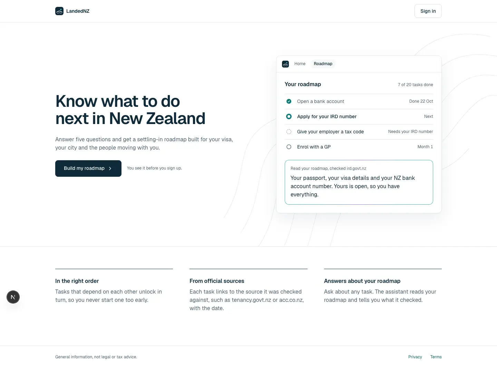
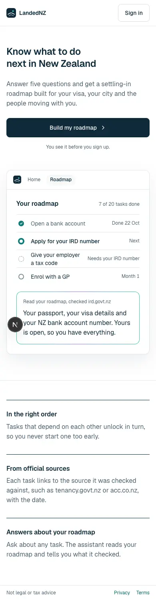
Desktop: mouse over and press
Build my roadmap
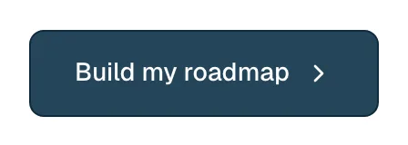
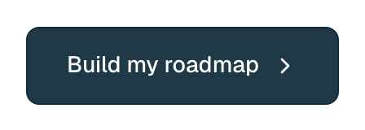
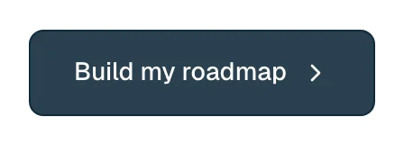
Sign in
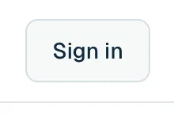
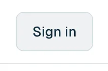
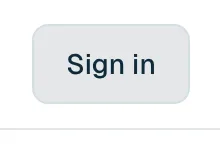
Privacy

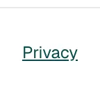
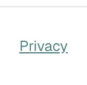
Phone: finger held down (phones have no hover)
Build my roadmap
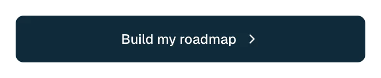
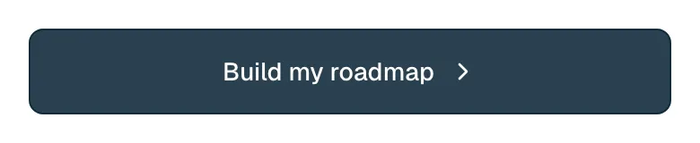
Sign in
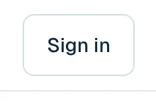
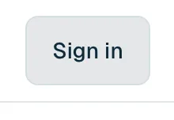
Privacy
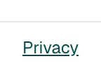
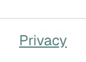
Onboarding · question 1
/onboarding?step=1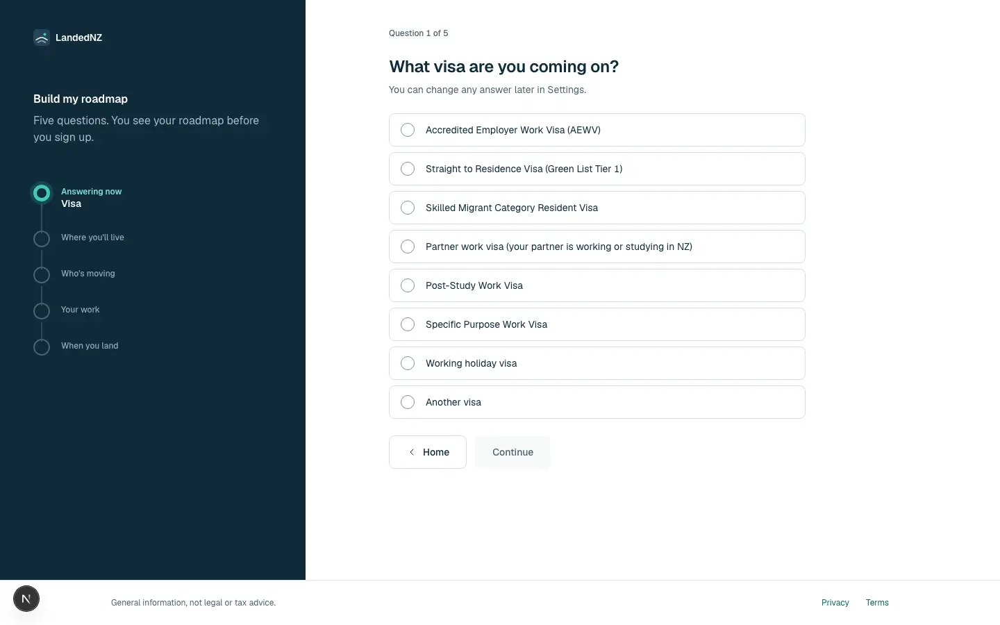
Desktop: mouse over and press
Accredited Employer Work Visa (AEWV)
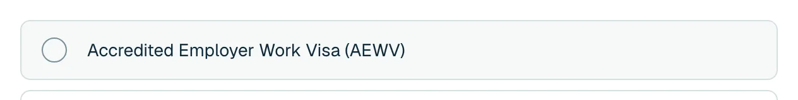
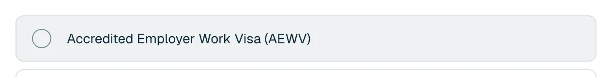
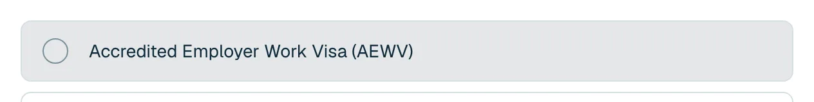
Home
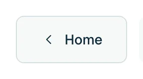
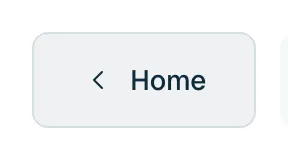
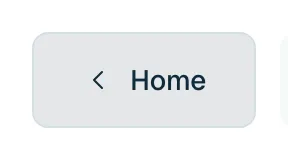
Phone: finger held down (phones have no hover)
Accredited Employer Work Visa (AEWV)
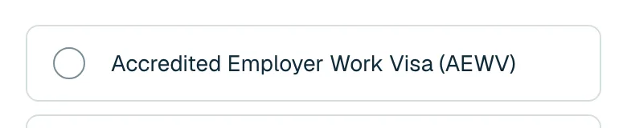
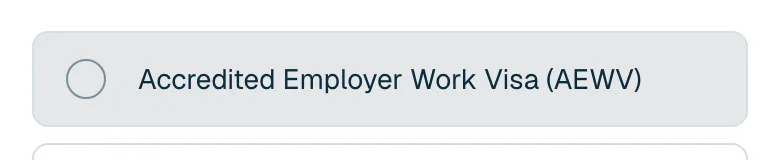
Onboarding · question 5
/onboarding?step=5

Desktop: mouse over and press
Continue


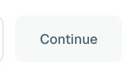
Phone: finger held down (phones have no hover)
Continue

Roadmap preview
/onboarding/preview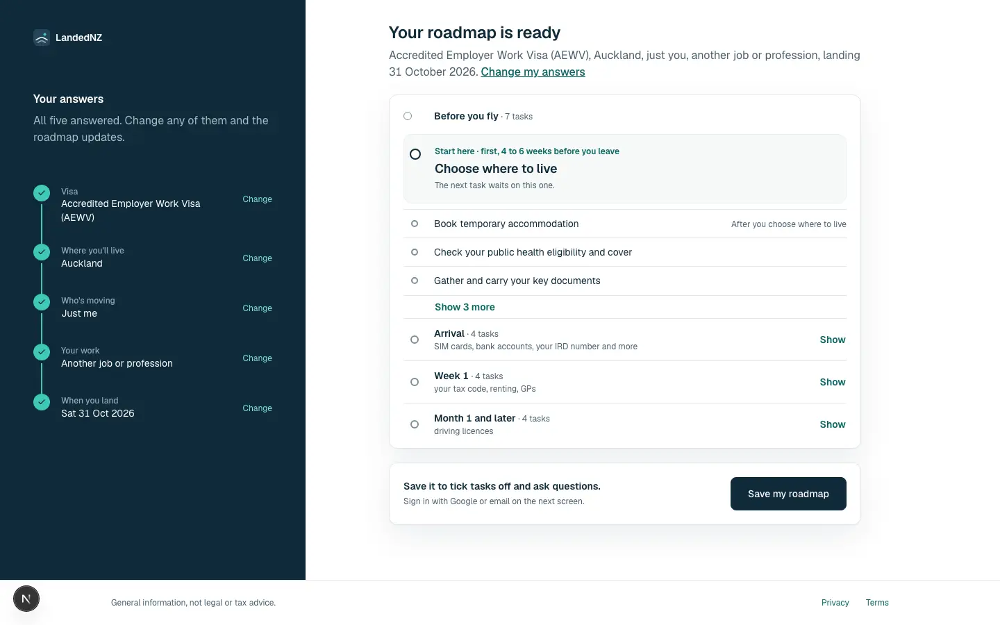
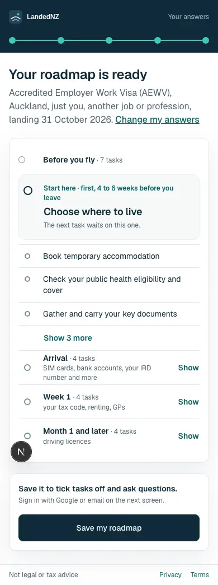
Desktop: mouse over and press
Save my roadmap
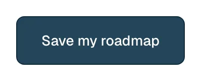
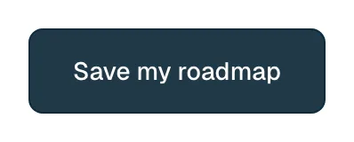
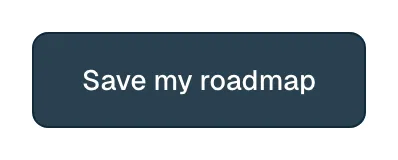
Phone: finger held down (phones have no hover)
Save my roadmap
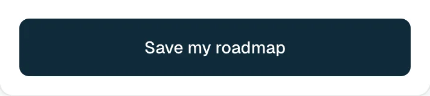
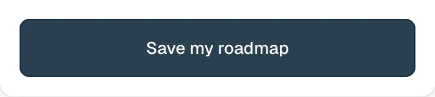
Save your roadmap (sign in)
/signin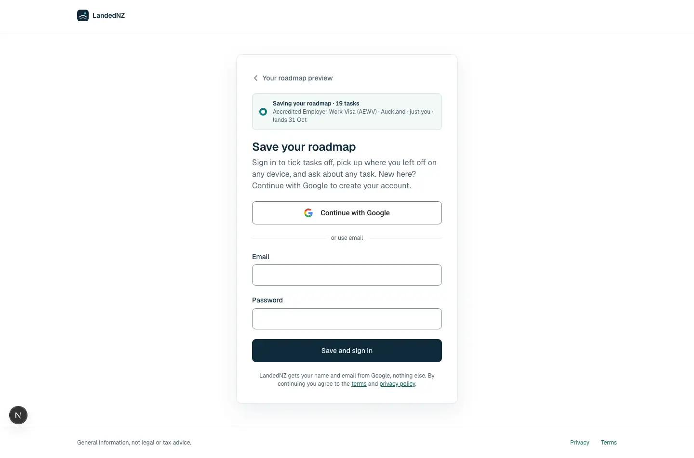
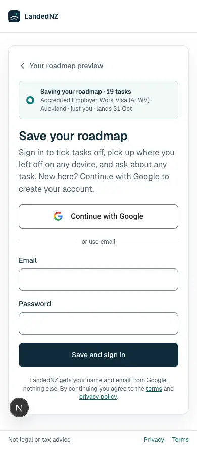
Desktop: mouse over and press
Save and sign in
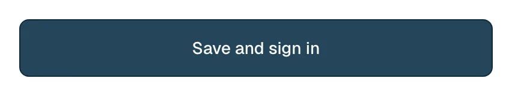
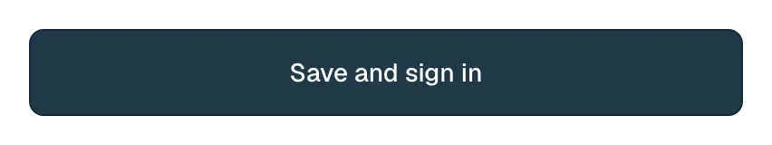
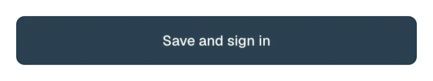
Your roadmap preview
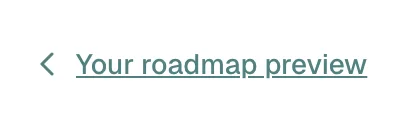
terms
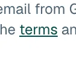

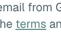
Phone: finger held down (phones have no hover)
Save and sign in
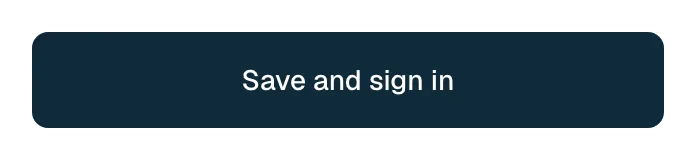
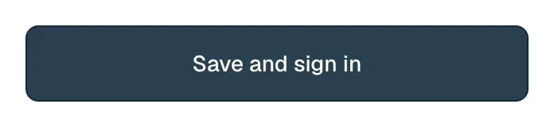
Your roadmap preview
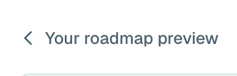
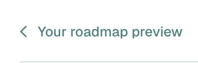
terms
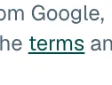
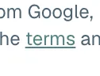
Home
/app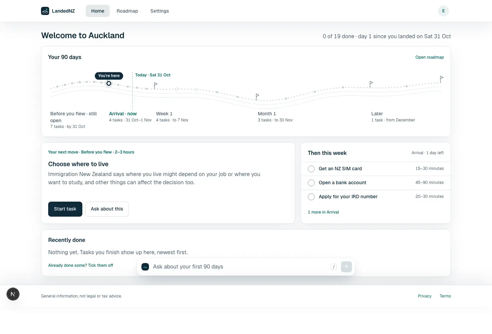
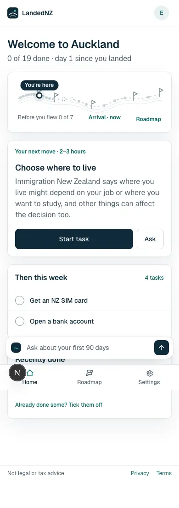
Desktop: mouse over and press
Roadmap
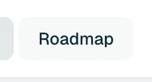
Start task
Ask about this
Get an NZ SIM card
Open roadmap

Phone: finger held down (phones have no hover)
Roadmap
Start task
Ask about this
Get an NZ SIM card
Roadmap
/app/roadmapDesktop: mouse over and press
Book temporary accommodation
Show 7 more
Start task
Phone: finger held down (phones have no hover)
Book temporary accommodation
Start task
Task
/app/roadmap?task=T08Desktop: mouse over and press
Mark as done
Open the IRD application
Next task
Phone: finger held down (phones have no hover)
Mark as done
Open the IRD application
Settings
/settingsDesktop: mouse over and press
Change
Manage
Sign out
Delete account
Phone: finger held down (phones have no hover)
Change
Manage
Sign out
Delete account
Settings · edit arrival date
/settings?edit=arrivalDateDesktop: mouse over and press
Save and rebuild


Cancel
Phone: finger held down (phones have no hover)
Save and rebuild

Cancel
Your decisions
- State strength. A: 6 % hover / 10 % pressed recommended (calm, close to today's wash shade) · B: 8 / 12 % (Material 3's values, more visible on phones).
- Floating radius for ask bar, guide pane and phone sheet: 16 recommended (inside the 12–16 card range) · 18 (today's pane).
- Fold "avatar" into the selected surface (#E8F2F1 → #F3F9F8): yes recommended · keep separate.
- Citation chip hover: state layer like everything else recommended · keep today's solid teal fill.
- Pressed feedback everywhere on phones (rows, nav, buttons, chips): yes recommended.
Standards: Material 3 state layers m3.material.io/foundations/interaction/states/state-layers · Carbon colour tokens carbondesignsystem.com/elements/color/tokens · Apple HIG 44 pt targets · WCAG 2.2 SC 2.5.8. Full list with checked links goes in standards.md before build.